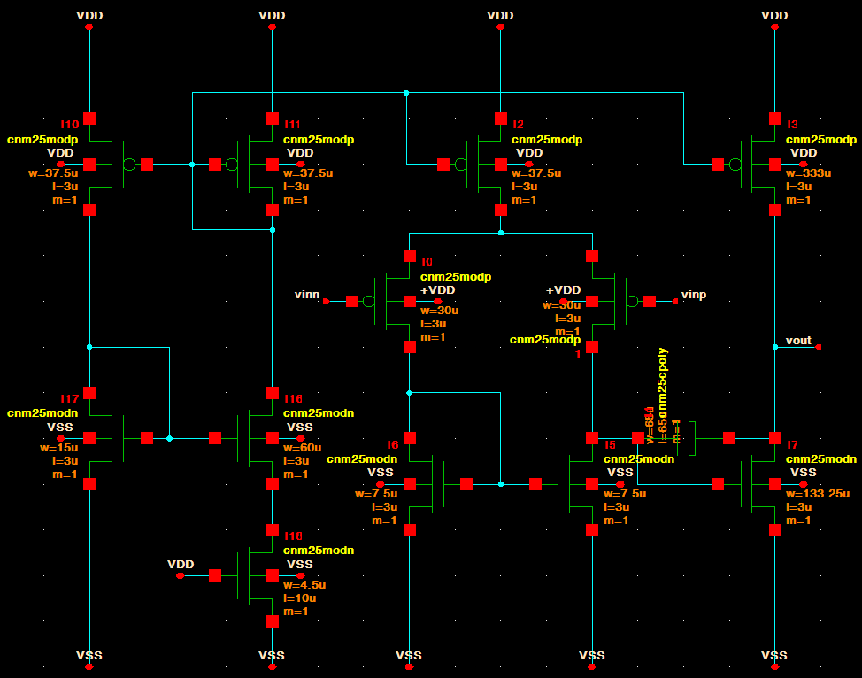
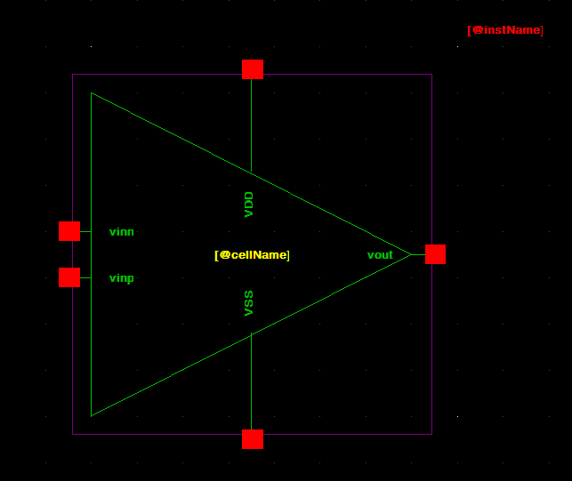

4. Build the Two-Stage CMOS Amplifier
Build the amplifier as a normal Glade schematic first. Do not start the layout yet.
- Create a cell named
TwoStageCMOSAmp. - Open/create its
schematicview. - Click Create → Instance for every device.
- Use
CNM25TechLib → cnm25modp → symbolfor PMOS devices. - Use
CNM25TechLib → cnm25modn → symbolfor NMOS devices. - Press q on each MOS and enter its
w,l, andm. - Wire the devices to match the schematic below.

CNM25 device sizes used here
| Device group | W / L |
|---|---|
| Input PMOS pair | 30u / 3u |
| NMOS active-load pair | 7.5u / 3u |
| PMOS bias/mirror devices | 37.5u / 3u |
| NMOS bias device | 15u / 3u |
| NMOS ratio device | 60u / 3u |
| MOS current-setting device | 4.5u / 10u |
| Second-stage NMOS | 133.25u / 3u |
| Second-stage PMOS | 333u / 3u |
Use m=1 unless you intentionally split a device into fingers/multipliers.
Compensation capacitor
Click Create → Instance, then choose CNM25TechLib → cnm25cpoly → symbol. Set:
w = 68.75u
l = 68.75u
m = 1
This is approximately 2 pF at the typical CNM25 corner.
Bulk/body connections
- Every PMOS bulk →
VDD - Every NMOS bulk →
VSS
In layout, the PMOS bulk is the NTUB/N-well connection. Do not leave MOS bulk pins floating.
External pins
Create these top-level pins:
vinn
vinp
vout
VDD
VSS
Check the amplifier
Click Check → Check CellView.
Fix everything until it reports:
0 warnings, 0 errors
Create the op-amp symbol
- Keep the amplifier schematic open.
- Click Create → Create CellView from CellView.
- Create a symbol view.
- Choose a triangle shape.
- Put:
vinn,vinpon the leftvouton the rightVDDandVSSon top/bottom
- Save the symbol.

Now use this symbol in the simulation schematic.